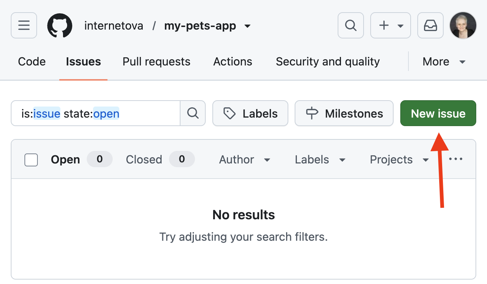
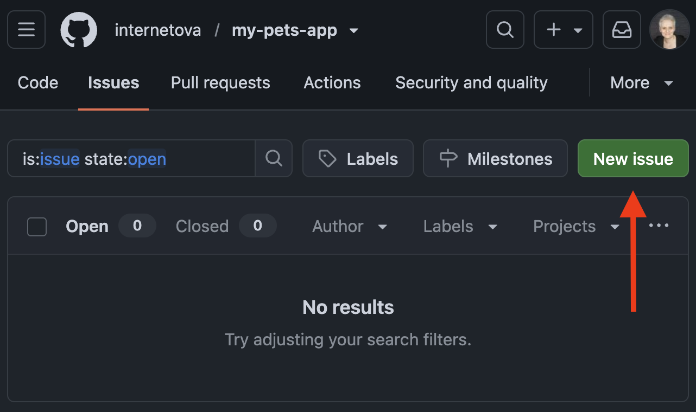
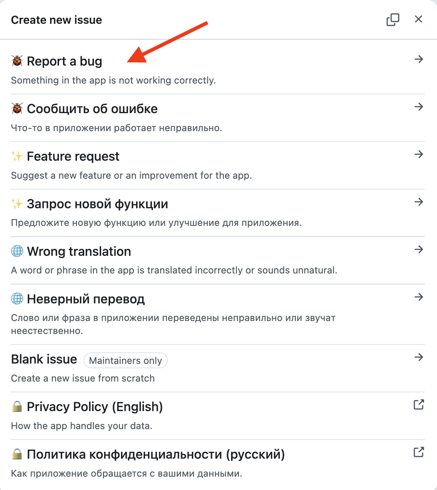
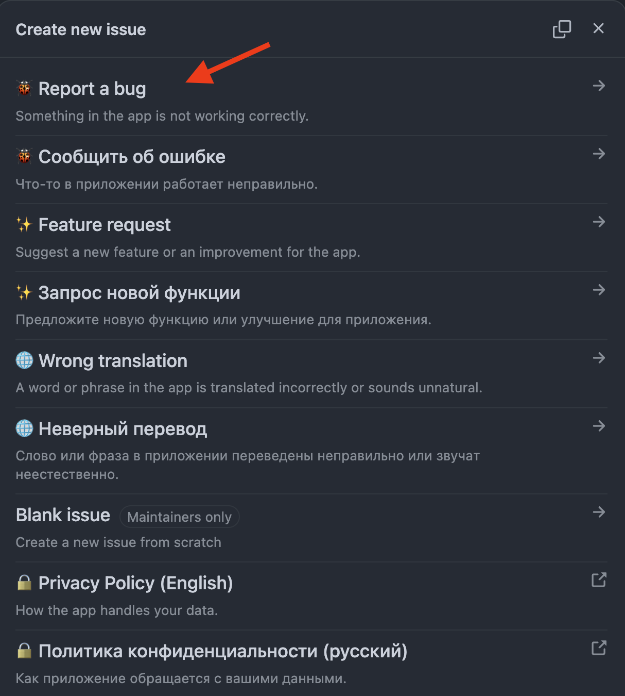
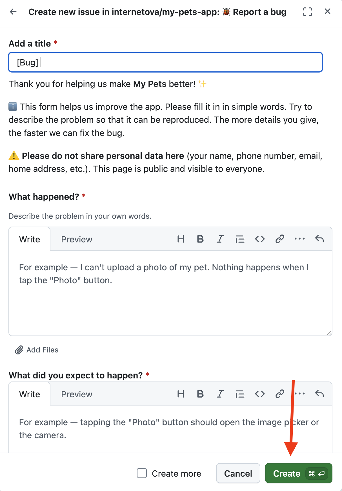
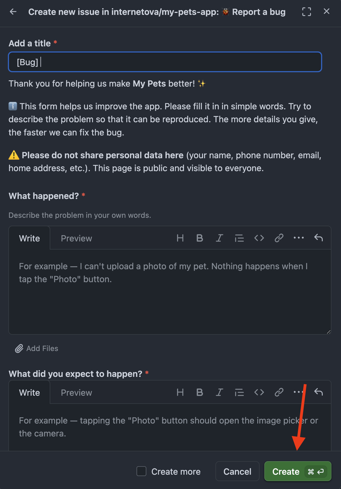

If something in the My Pets app doesn't work the way it should, you can let the developer know. You don't need to be a programmer for this — just describe the problem in plain words. The clearer you explain what happened, the faster the bug can be found and fixed.
Bug reports are collected on the Issues page on GitHub — an open list where anyone can report a problem or suggest an improvement.
ℹ️ To send a report you need a free GitHub account and to be signed in. If you don't have an account yet, you can create one in a couple of minutes — the sign-up button is on the GitHub website.
⚠️ Do not include personal data in your report (your name, phone number, email, home address, etc.). The page is public and visible to everyone.
Go to the app's issues page.
First, look through the list of open issues — someone may have already reported your problem. If you find a similar issue, open it and add your comment: this helps the developer see that the problem affects several people. In that case there's no need to create a new report.
If there's nothing similar, click the green New issue button in the top-right corner.


A window with issue types will open. Click 🐞 Report a bug — this option is for when something in the app is not working correctly.
The same window has other options too: ✨ Feature request — if you'd like to suggest an improvement, and 🌐 Wrong translation — if you spotted a mistake or awkward wording in the app's text. Pick the English options — their titles are written in English.


A form will open. Fill it in using plain words:
[Bug] part is already filled in; add the gist after it.At the end, tick the checkbox confirming that you didn't leave any personal data in the report, and click the green Create button.


That's it! Your report will appear in the shared list, and the developer will see it. If any clarifications are needed, the reply will come right in your issue — so check back on it from time to time. Thank you for helping make the app better! ✨